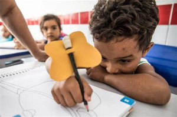
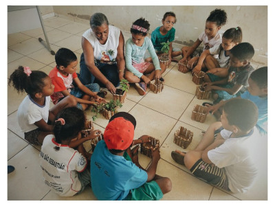

A educação é um dos setores mais importantes e significativos ja que deixa uma sociedade se desenvolver. É por meio da educação que os humanos ficam cada vez mais críticos e ganham consciência de seu qual o seu papel no mundo.
A ação de educar, possui relação direta com a disciplina. Em um sentido um pouco mais técnico, educar é o longo processo de desenvolver as faculdades físicas e morais de cada pessoa, visando se integrar, da melhor maneira, a sociedade ou o grupo em que está inserido.
Cada metodologia deve refletir o estudo dos métodos que foram empregados no trabalho, em especial os métodos científicos. Trata-se de um processo minucioso e detalhado com objetivo de buscar a verdade para alcançar um propósito determinado previamente.

No Brasil, a pesquisa acadêmica tem grande espaço, em especial nas universidades de todo o País. Existem pesquisadores com reconhecimento e prestígio internacional com trabalhos expostos à comunidade científica.
A educação formal é dividida em categorias:
Educação básica:É obrigatória e deve iniciar o processo educacional de cada ser humano. Tem como responsabilidade fazer esse papel tanto os pais ou responsáveis das crianças bem como o Estado. Dentro da educação básica estão incluídas a educação infantil, a pré escola, o ensino fundamental e o ensino médio.
Educação superior:A universidade e a faculdade são instituições com as mais diversas disciplinas, podem ser públicas ou particulares para transmitir o conhecimento. As instituições de educação superior podem criar os cursos além de emitir os diplomas de graduação.